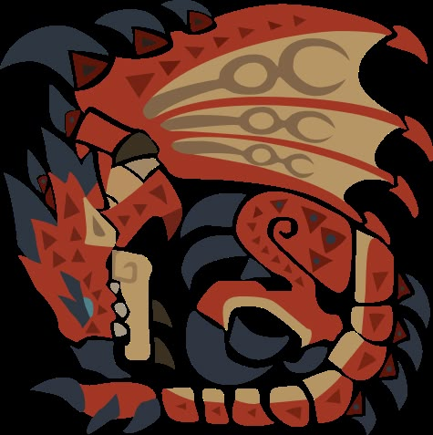
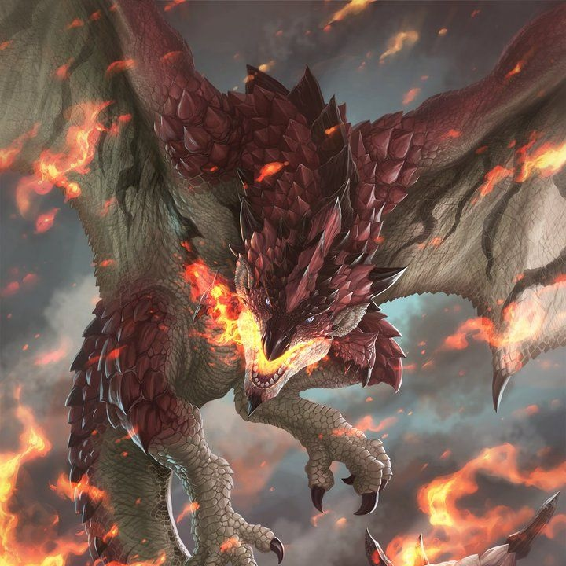

 |
MONSTER HUNTER |
 |
|||||
|
Rathalos adalah monster yang muncul di seri Monster Hunter. Ia dikenal sebagai "Raja Langit" dan merupakan salah satu monster ikonik dalam franchise ini.
Rathalos memiliki kemampuan terbang yang luar biasa, serangan api yang mematikan, dan cakar yang tajam. Ia biasanya ditemukan di hutan dan pegunungan, dan menjadi target utama bagi para pemburu yang ingin mendapatkan material berharga dari tubuhnya untuk membuat senjata dan armor. |
|
Tanggal Rilis Monster Hunter-1 11 Maret 2004 Di PS 2 |
|||||
| Home | |||||||
| Rathalos | |||||||